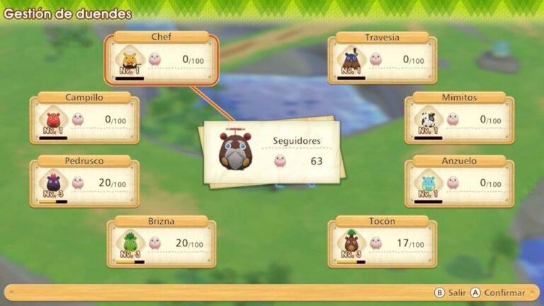
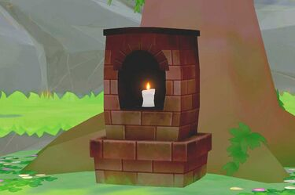
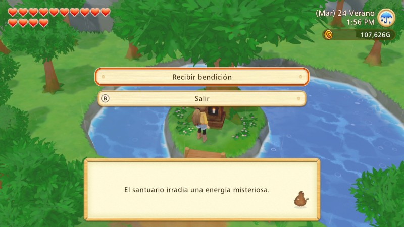

Duendes de la cosecha
En Story of Seasons: Pioneers of Olive Town, encontrarás criaturas redondas y rosadas que rebotan en los cultivos y en las rocas. Estos son los duendes de la cosecha .
Aldea de los duendes de la tierra
Puede encontrar duendes haciendo casi cualquier cosa en tu granja: cosechar cultivos, labrar la tierra, recolectar minerales, talar árboles y cortar hierba. Al principio del juego, no hay mucho que hacer con los duendes, pero a medida que recolectes más, desbloquearás más cosas para hacer con ellos.
Una vez que encuentre 25 duendes, podrá visitar la Aldea de los duendes de la tierra, donde estos te darán materiales, comida y peces. Cuantos más duendes asignes, más bienes obtendrás y de mayor calidad serán. Asegúrate de visitar la aldea de los duendes de la tierra con frecuencia para recoger recompensas. Los duendes te darán diferentes recompensas por ejemplo: Tocón te dará madera, Pedrusco te dará piedras o minerales y Mimitos comida para tus animales. Intenta probarlos todos.
Si el número de seguidores es mayor, el numero de recompensas será mayor también. Debes dar más seguidores en función de lo que más te interese conseguir.
Al principio, solo tendrás acceso a tres de los sprites: Brizna, Pedrusco y Tocón. Puedes desbloquear más usando puntos en el santuario.
Santuario
En la parte trasera de Olive Forest se encuentra un pequeño santuario iluminado con velas que emana una energía misteriosa en medio de un manantial. Cuando el jugador haya visto los eventos del Espíritu, el santuario estará disponible para su uso.
Monedas de cosecha
Una vez que encuentres 100 duendes, un espíritu se despertará, lo que te llevara a un lugar donde se encuentran grandes espiritus y ahi puedes colocar a los mini-duendes con los grandes espiritus, con eso podras recibir recompensas de los grandes espirutos y entre esas recompensas podras obtener monedas de cosecha para usarlos en el santuario.
Bendiciones del Santuario
Puedes recibir bendiciones en el santuario después de alcanzar 100 espiritus de seguidores y ver el evento El espíritu de la primavera. Una vez desbloqueado, puedes entregar puntos de espiritus o monedas de cosecha por bendiciones que mejorarán tu vida en la granja. Aquí, puedes mejorar tu resistencia, mejorar la calidad del suelo de tu granja, desbloquear más sprites para darte más regalos en Earth Sprite Village e incluso desbloquear parcelas especiales de tierra que te permitirán plantar ciertos cultivos durante todo el año.
| Nº | Bendición | Puntos requeridos | Requisitos |
|---|---|---|---|
| 01 | Aumenta tu nivel de resistencia. | 10 | Ninguno |
| 02 | Vuelve a aumentar tu nivel de resistencia. | 20 | Ninguno |
| 03 | Eleva tu nivel de resistencia una vez más. | 40 | Ninguno |
| 04 | Aumenta el nivel de campo de tu granja. | 10 | Ninguno |
| 05 | El nivel del campo vuelve a aumentar. | 20 | Ninguno |
| 06 | El nivel del campo aumenta una vez más. | 40 | Ninguno |
| 07 | Desbloquea los jardines de pétalos de viento. | 100 | 150 o más espiritus de seguidores |
| 08 | Desbloquea los jardines del Sol Eterno. | 100 | 150 o más espiritus de seguidores |
| 09 | Desbloquea los jardines de arce rojo. | 100 | 150 o más espiritus de seguidores |
| 10 | Desbloquea los jardines de escarcha. | 100 | 150 o más espiritus de seguidores |
| 11 | Hazte amigo del duende del campo. | 10 | Ninguno |
| 12 | Hazte amigo del duende del pescador. | 10 | Ninguno |
| 13 | Hazte amigo del espiritu Chef. | 10 | Ninguno |
| 14 | Hazte amigo del duende del cuidado. | 14 | Ninguno |
| 15 | Hazte amigo del duende del viaje. | 10 | Ninguno |
| 16 | Desbloquea al pequeño lobo en la tienda de animales. | 30 | 200 o más espiritus de seguidores |
| 17 | Desbloquea el caballo en la tienda de animales. | 30 | 200 o más espiritus de seguidores |
| 18 | Desbloquea el lobo en la tienda de animales. | 30 | 300 o más espiritus de seguidores |
| 19 | Desbloquea el unicornio en la tienda de animales. | 30 | 300 o más espiritus de seguidores |
| 20 | Recibe Flor Gota Lunar (x99). | 10 | 600 o más espiritus de seguidores |
| 21 | Recibe flor de gato rosa (x99). | 10 | 600 o más espiritus de seguidores |
| 22 | Recibe Flor Azul Mágica (x99). | 10 | 600 o más espiritus de seguidores |
| 23 | Recibe Flor Roja Mágica (x99). | 10 | 600 o más espiritus de seguidores |
| 24 | Reciba aspersores mejorados (x5). | 10 | 600 o más espiritus de seguidores |
| 25 | Recibe cebo guardián (x10). | 10 | 600 o más espiritus de seguidores |
| 26 | Recibe peluche misterioso (x1). | 10 | 600 o más espiritus de seguidores |
| 27 | Recibe la medalla de oro de la ciudad (x50). | 10 | 600 o más espiritus de seguidores |
| 28 | Recibe 5000 monedas de sprites terrestres. | 10 | 600 o más espiritus de seguidores |
Lugares secretos de los duendes
A medida que avances en el juego y realices diferentes tareas en la granja y la mina recibirás más duendes seguidores y desbloquearas diferentes lugares donde podrás ir a jugar los minijuegos de los duendes para obtener más recompensas.